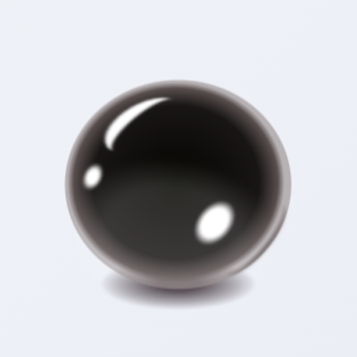
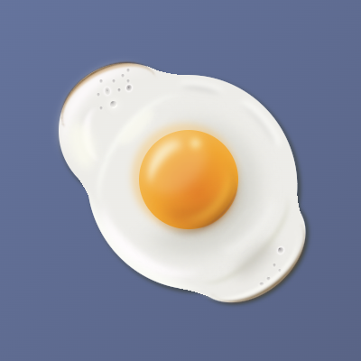
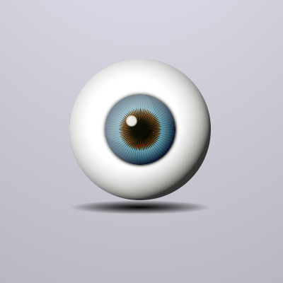

ごった煮
いろいろ紹介しています。
- 「🌸」印の箇条書き項目
- 様々なボタン
- 固定ヘッダーとフッター
- 様々なグラデーション
- スムーズスクロールとぴたっとスクロール
- 縦書き
第二章
あのイーハトーヴォのすきとおった風、夏でも底に冷たさをもつ青いそら、うつくしい森で飾られたモリーオ市、郊外のぎらぎらひかる草の波
またそのなかでいっしょになったたくさんのひとたち、ファゼーロとロザーロ、羊飼のミーロや、顔の赤いこどもたち、地主のテーモ、山猫博士のボーガント・デストゥパーゴなど、いまこの暗い巨きな石の建物のなかで考えていると、みんなむかし風のなつかしい青い幻燈のように思われます。では、わたくしはいつかの小さなみだしをつけながら、しずかにあの年のイーハトーヴォの五月から十月までを書きつけましょう。
Section 3
Section 4
Section 5
Section 6
✨安い！！お得！！激安CSS！！✨
19,800 円ソースコードを見る
<span class="price">
<span class="price1">19</span><span class="price2">,800</span>
<span class="yen">円</span>
</span>
@import url(https://fonts.googleapis.com/css?family=Poppins:700);
.price {
color: #c70506;
text-shadow: 2px 0 0 #fff,
0 2px 0 #fff,
-2px 0 0 #fff,
0 -2px 0 #fff,
5px 4px 3px #0008;
font-weight: bold;
font-family: Poppins;
letter-spacing: -3px;
}
.price1 {
font-size: 78px;
margin-right: -5px;
font-style: italic;
}
.price2 {
font-size: 59px;
margin-right: 10px;
font-style: italic;
}
.yen {
font-size: 40px;
}
HTML + CSSでリアルなタピオカを作る
HTML + CSSでリアルな目玉焼きを作る
リアルな眼球を描く。HTMLとCSSだけで。
Typing Lessons
「Ｆ」「Ｊ」のホームポジションから始まり、数字や記号に至るまで滑らかに入力できるよう練習できるサイトです。
タイピングを習得する利点は以下の通りです。
- 効率的な作業: タイピング速度が向上することで、文書作成やデータ入力が迅速に行えます。
- コミュニケーションの向上: メールやチャットなど、オンラインでのコミュニケーションがスムーズになります。
- 集中力の向上: 視線を画面に向けたままタイピングができるため、書くことに集中しやすくなります。
- 職業的なスキル: 多くの職場で求められる基本的なスキルであり、就職やキャリアアップに役立ちます。
- 学習の効率化: レポート作成や研究の際に、情報を速やかにまとめることができ、学習効果が向上します。
- 自己表現の向上: アイデアや考えを素早く文章にすることで、自己表現がしやすくなります。
- コードの迅速な入力: プログラミングではコードを書く速度が重要です。
- エラーチェックの効率化: タイピングスピードが向上すると、コードの修正やデバッグ作業が迅速に行えます。
- 文法の理解: タイピングを通じてプログラミング言語の文法や構文に慣れることができます。
- アルゴリズムの実装: 複雑なアルゴリズムを実装する際、速やかにコードを書くことができるため、試行錯誤がしやすくなります。
- プロジェクトの効率化: チームでの共同作業やコードレビューがスムーズになり、プロジェクト全体の効率が向上します。